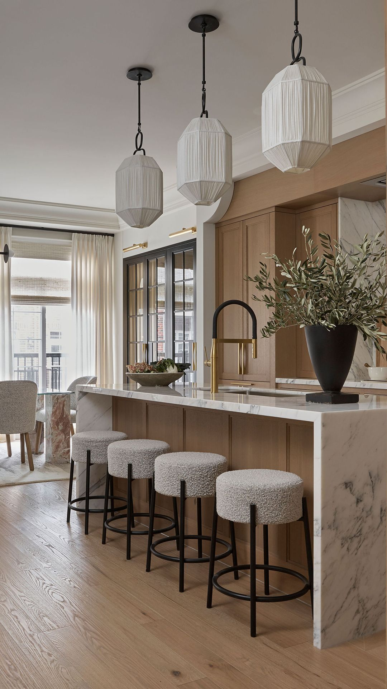

DECO IDEAS
LIVING ROOM
1. Enhance a Backyard View
Working with landscape architect Lila Fendrick, designer Nestor Santa Cruz chose a wall of steel and glass windows and doors for this formal pool house living room that leads to the backyard. Though the glass decor, from the pendant light to the coffee table and doors, leaves a decidedly sleek impression, the plush rug and ethereal curtains make it extra cozy, too.
2. Work Around Restrictions
When designer Celerie Kemble moved into this New York City apartment, there was only one thing that prevented it from being the perfect fit: The building had a no wallpaper rule. To work around that obstacle, she applied a light shade of pink paint in a plaster-like finish that channels the texture of wallpaper.
3. Mix Clean Lines With Casual Materials
In the living room of designer Devin Kirk, a light shade of blue-gray along with clean-lined furniture makes for a polished backdrop while the woven chairs, light wood side table, and tree stump coffee table ensure a laidback atmosphere. It's the perfect balance of approachable and formal.
4. Incorporate Fun Trees and Plants
Invite some nods to nature into your living room with quirky indoor plants and trees. Designer Elizabeth Cooper placed a lush citrus tree in the corner for an extra pop of life and color and then staggered topiaries on the windowsill.
5. Create Zones With Area Rugs
Invite some nods to nature into your living room with quirky indoor plants and trees. Designer Elizabeth Cooper placed a lush citrus tree in the corner for an extra pop of life and color and then staggered topiaries on the windowsill.
Gorgeous Gray Living Room Ideas for a Stylish Neutral Space
These gray living room ideas demonstrate how to use this contemporary neutral on walls, furniture, and decor.
Gray Living Room IdeasBest Living Room Wall Decor Ideas
Before you pick up a hammer and nails, take a look at some of these living room wall decor ideas.
Living Room Wall Decoration IdeasLiving Room Lighting Ideas That Instantly Brighten Things Up
We're spotlighting some living room lighting ideas (both ambient and task-specific) to keep your entertaining and hangout space well-lit, stylish, and functional.
Living Room Lighting IdeasPastel kitchen ideas to add color, calm and playful personality
Ice cream, light and airy shades are the new neutrals for your cooking space. Nod to pastel kitchen ideas for a fresh new look.
Pastel Kitchen IdeasL-Shaped Kitchen Ideas
Whether it is adding drawer storage or using sultry shades, these L-shaped kitchen ideas will help you maximise space while creating a stylish look using two runs of cabinetry on adjacent walls.
L-Shaped Kitchen Ideas

TIPS FOR DESIGNING A MONOCHROMATIC KITCHEN
The clean look of a single color across your cabinetry, walls and counters creates a stunning backdrop where you can go about your daily tasks of cooking for your family.
Monochromatic Kitchen IdeasKITCHEN
1. Make It Feel Extra Homey
Just because your kitchen doesn't get a ton of natural light doesn't mean it can't have a sunny disposition. The cheerful yellow wallpaper in Shavonda Gardner's kitchen proves it. Featuring unlacquered copper pots, soapstone counters that quickly patina, and a simple central dining table instead of a kitchen island, the kitchen's lived-in atmosphere instantly makes anyone who enters feel right at home.
2. Place Extra Chairs in Low-Traffic Corners
If the space is small, play around with fun wallpaper. Something with a little sheen will make the room gleam... even if you haven't gotten to the dishes in, uh, a while. Sheila Bridges also opted for a complementary fabric on these accent chairs to enhance the blues throughout and tucked them in a low-traffic corner for convenience.
3. Use Statement Fabric for Seating
Designer Kristin Fine gave her classic farmhouse a modern twist with glossy zellige tiles on the walls, Calacatta marble from ABC Stone on the counters, and vintage opaline pendants, black flush mounts, and vintage stools reupholstered in a mossy Pierre Frey fabric. The exposed beams maintain the countryside roots of the home and the pale green tones honor the forest views outside.
4. Start With One Accent Piece
This kitchen was designed around the homeowners's inherited ceramic collection. She told designer Andy Beers of Ore Studios that she wanted the blue midcentury serve ware and tableware to anchor the entire space, so they mixed in open cubbies and added splashes of red for a vibrant yet straightforward color palette.
5. Remodel Cabinet Uppers to Optimize Storage
If your kitchen wall is lined with windows, consider adding a pretty treatment that doesn't totally block the light, like cafe curtains, and make sure your lower cabinets can take care of most of the storage needs. This way, you can forgo lining the wall with uppers. Instead, install one strategic column. Heidi Caillier customized the open shelves for cookbooks, plates, drinkware, and even artwork.
DINING ROOM
1. Balance Warmth With Formality
A matching table and chair set creates cohesion in this eclectic dining nook designed by Ariene Bethea. Bolster pillows and custom throws make the corner nook extra cozy and multi-purpose. Though it feels tailored, it's still approachable and warm.
2. Separate Zones With Ceiling Wallpaper
A sunny shade of sisal wallpaper connects the open kitchen to the dining room and separates it from the seating area in this great room designed by Halden Interiors.
3. Think Outside the Obvious Layout Options
An offset, extra-large circular table flatters the shape of the window nook without appearing too cramped, as it's not crammed right up against the windows nor smack dab in the middle of the room. While the colors are muted and the materials are understated, the goemtric shapes throughout add tons of intrigue.
4. Enable Indoor/Outdoor Flow
Kingston Lafferty Design created an indoor/outdoor dining room by extending a built-in table on both ends of the wall. They're connected by a large window with accordion glass doors for seamless flow when larger parties are dining and visually by the glossy tiles. Visually, they're a stylish statement and outside, a durable, weatherproof material. Plants also make the two spaces feel like they're in conversation with each other.
5. Customize a Banquette
Custom back cushions that match the seats create both cohesion and comfort in this dining nook designed by Studio Shamshiri. The wooden wall paneling warms up the darker elements and also reflects the more casual chairs across the table.
Indoor Plants Dining Room Decor Ideas
There’s nothing like enjoying your meal in the vicinity of greenery. Here are some beautiful Indoor Plants Dining Room Décor Ideas you can use!
Indoor Plants Dining Room Décor IdeasBoho Ideas For Your Dining Room That You Have To See
The boho look can be a very appealing aesthetic to adopt in your dining room.
Boho ideas for Dining Rooms
Black Dining Rooms That Your Dinner Guests Will Adore
Black decor can look suave and seductive but it’s not always easy to hit that target of sophistication, with many black interior schemes coming across as decidedly dull.
Black Dining Rooms IdeasDouble-Sinks Bathroom Vanities
It’s time for a double bathroom sink vanity.
Double-Sinks Bathroom IdeasAffordable Bathroom Wall Decor Ideas For Modern Lifestyles
Bathroom wall decor can enhance your shower and toilet space. When you cover your bathroom walls with artwork, you create an added layer of style.
Bathroom Wall Decor IdeasPlants to Grow in Your Bathroom
Add these low-light, humidity loving plants to your bathroom for ultimate spa vibes.
Bathroom with Plants IdeasBATH ROOM
1. Open Plan
This bold minimalist open plan double shower and bath from interior designer Cathie Hong of Cathie Hong Interiors has pivoting glass doors that can be left open to maximize light and air flow from the wrap-around windows, or shut to prevent unwanted shower splashes. Double showerheads are discreetly installed on opposite sides of the self-enclosed wash room, keeping the focus on the tub and the view.
2. Double Wall-Mounted Sinks
Not every shared bathroom needs a built-in double vanity. In this child's shared bathroom from JL Design, matching wall-mounted industrial sinks are hung at kid-friendly height to give siblings their own space.
3. Wall Tile
Covering bathroom walls in floor-to-ceiling stone or tiling has become a widespread design trend that is practical from a cleaning perspective and has the visual advantage of drawing the eye upward to make bathrooms feel more spacious.
4. Lighting
Installing good lighting is an important part of any room design, but bathroom lighting can often be harsh and unflattering in the room where you least want it to be. In this bathroom from interior designer Rhianna Jones of Tidal Interiors, LED backlighting adds a glamorous touch to a sleek built-in wall-to-wall shower niche. The ambient light creates a soothing glow for nighttime showers and adds another layer of lighting in a space lacking in natural light. If attempting to add light to a shower, be sure to enlist a professional who can ensure that it's safe and waterproof.
5. Upcycled Vanity
When choosing a bathroom vanity, consider upcycling a vintage or antique wood piece of furniture and adding a sink and waterproof countertop. Interior designer Abbie Naber of A. Naber Design upcycled a midcentury modern buffet into a handsome bathroom vanity with character and plenty of storage.
BED ROOM
1. Cozy Built-in Bed Nook
In their New York cottage, Sea Roost, Mate Gallery owners Matt Albiani and Ron Brand transformed the small bedroom into a dreamy coastal retreat by building a cozy captain's bed that they then surrounded with vintage indigo textiles and topped with an indigo-inspired wallpaper.
2. Small Space Storage
You would never guess that this bright and airy all white bedroom measures only 170 square feet! Painting the planked ceiling, shiplapped walls, and trim all the same crisp, clean white was key to achieving this deceivingly spacious look.
3. Statement Headboard
In her master bedroom, style blogger and author Liz Marie Galvan (@lizmariegalvan) chose a mantel-inspired headboard to add architectural interest against the plain white walls. A chunky cable-knit throw atop layers of subtle striped bedding provides softness.
4. Mixing Patterns
For a bedroom that really pops, like this Texas guest room, start by painting your walls and trim a crisp white. Then bring in graphic patterns through a rug and upholstered headboard. Topping the bed with all white bedding helps the patterns pop even more. Tip: Choose pieces of similar colors to keep the look tailored and sophisticated.
5. Salvaged Headboard
For a unique headboard, stylist Matthew Gleason turned a salvaged door on its side. To keep installation easy, attach the door directly to the wall and pair with a simple platform bed.
Classy Bedroom Wall Decor Ideas to Style Up Your Space
Your bedroom is where you live and sleep. It goes without saying that your bedroom should be comfortable. But why not be comfortable and classy at the same time. Running short on ideas?
Bedroom Wall Decor IdeasChic Bedroom Decorating Ideas for Teen Girls
Every teen girl has her own unique style. What better way to express it than in a room all her own?
Chic Bedroom Decorating IdeasBeautiful Black & White Bedroom Designs
These gorgeous black and white bedrooms show the stretch of the monochromatic theme.
Black & White Bedroom Designs